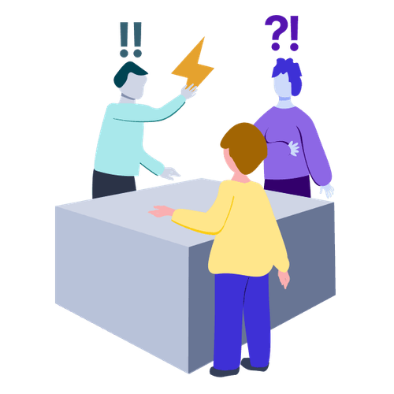

Mit der Academy erhaltet ihr im Business-Plan praxisnahe Lernmodule rund um Facilitation und wirksame Transformation.
Gemeinsam mit 9 Spaces zeigt Plan International Deutschland, wie wertebasiertes Arbeiten Orientierung gibt – nach innen wie nach außen.

Dieses Tool hilft Führungskräften dabei, Reibungen und sich anbahnende Konflikte im Team zu klären, bevor sie sich verhärten.
Eine einfache Struktur für situatives und konstruktives Feedback im Arbeitsalltag.
Mit diesem Tool könnt ihr die zentralen Spannungsfelder in eurer Organisation besser verstehen und in eine produktive Balance bringen.
Dieses Tool hilft eurem Team dabei, einen guten Umgang mit Emotionen für eine noch bessere Zusammenarbeit zu finden.